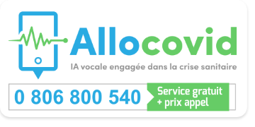
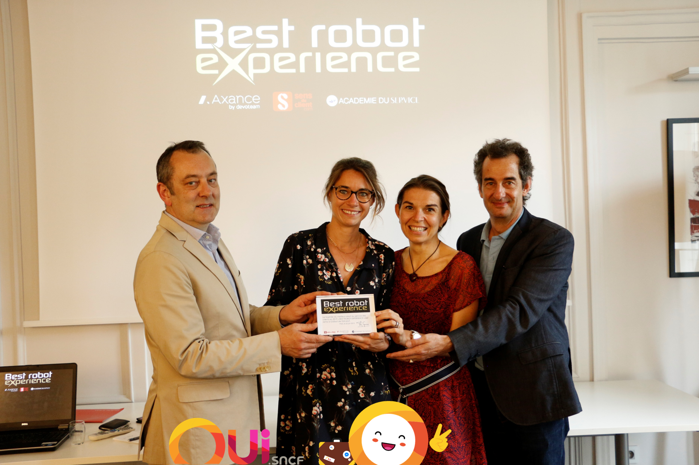
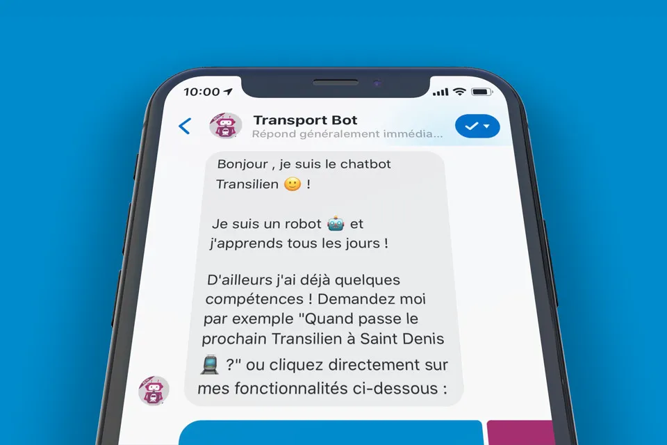
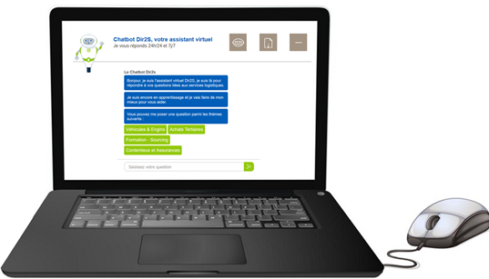
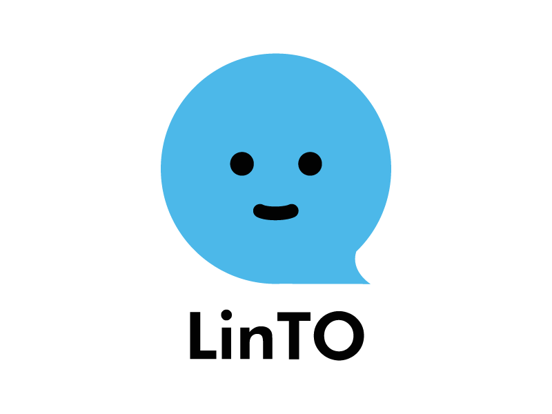
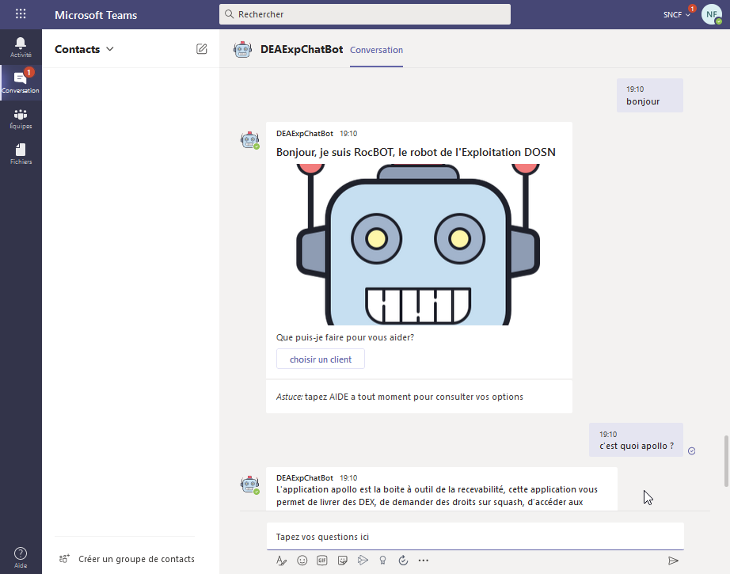
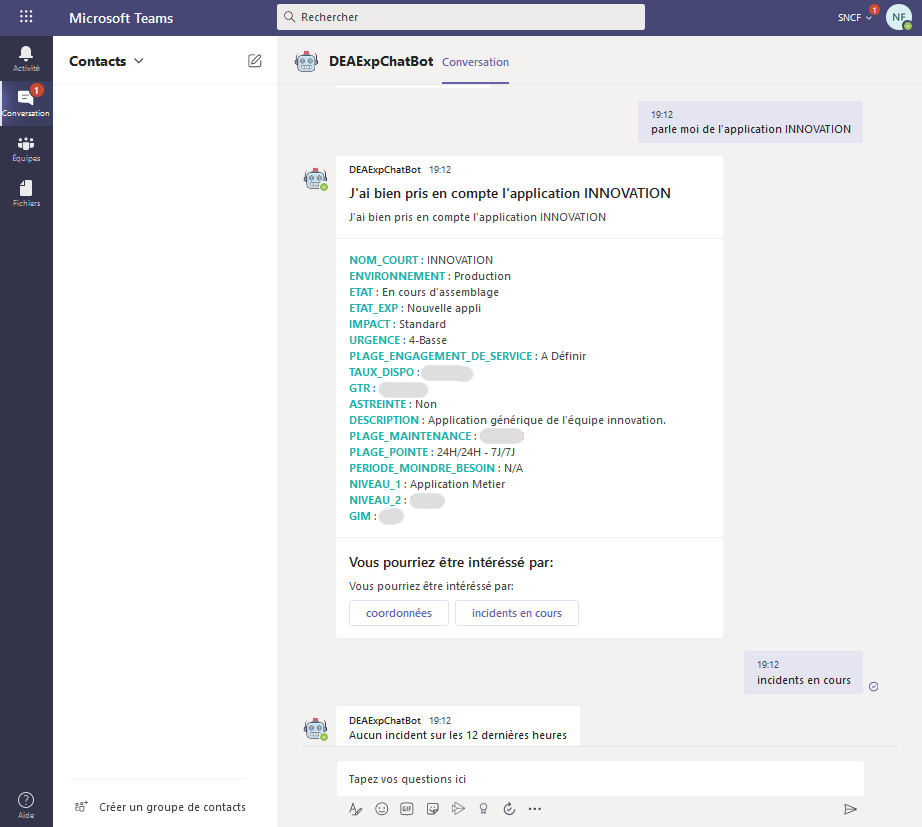
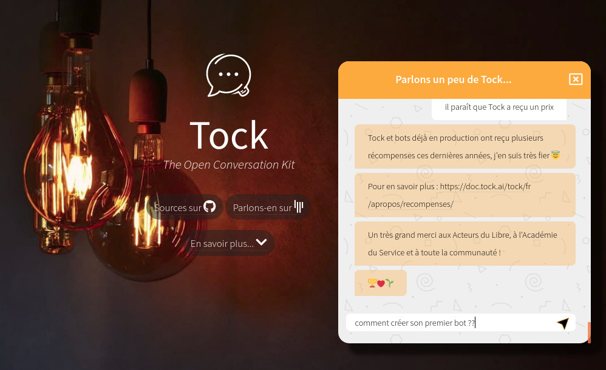

User showcase
From its creation for OUI.sncf in 2016 to the French AlloCovid service in 2020, Tock has been used by more and more teams and organizations to build conversational bots and services for various use cases :
- healthcare, transport, energy, e-commerce examples
- business to customer as well as business to business
- FAQ and "0 code" decision trees
- assistance, selfcare and live chat compatible
- text & voice channels: Web & mobile, messaging, smart devices, telephone services
This page presents various assistants and products built and powered by Tock, some of them awarded by the community.
Healthcare
AlloCovid
The AlloCovid conversational service informs and guides French population about the Covid-19.
It results from the collaboration of numerous French experts, tech partners and volunteers. To find out more about the project, the team and partners, how the bot works, etc. visit www.allocovid.com.
Available by phone, on the Web and WhatsApp, AlloCovid builds around a Tock bot and integrates with additional technologies such as Allo-Media and Voxygen voice solutions.
The AlloCovid bot is powered by open source technologies (Tock) and open source itself: its sources are available on
repository allocovid.
The source repository also includes the Allo-Media connector, technical details about the bot and its functional specification.

- Name: AlloCovid
- Date of birth: in production since spring 2020
- Field: health information and guidance
- Channels: text & voice, by phone, on WhatsApp and Website
Transport & e-commerce
OUIbot, the OUI.sncf bot
OUIbot is the conversational assistant from OUI.sncf. Available since 2016 on Facebook Messenger, OUIbot was built along with the first versions of Tock.
With OUIbot, booking a train ticket has never been easier! It assists you in the preparation of your trips, allows you to make a complete reservation quickly and easily, from research to purchase (payment included), and accompanies you during your trip.
Thanks to the numerous connectors, OUIbot is now available on multiple conversational channels, such as the company Website www.oui.sncf, social networks, voice assistants, smart display and even SmartBrics with JCDecaux devices.
In 2019, OUIbot answers approximately 10.000 users a day. It has been awarded Best Robot Experience for the second year in a row.

- Name: OUIbot
- Date of birth: in production since 2016
- Field: e-commerce/travel, transactions (booking, payment), alerts & push notifications, push messages to an agent
- Channels: text & voice, on the company Website, Messenger, WhatsApp, Business Chat (Messages), Google Assistant, Google Home, Alexa, JCDecaux SmartBrics
L'Assistant SNCF
L' Assistant SNCF is the mobile application for SNCF passengers on Android and iOS, covering both trains and other modes of transport.
With L' Assistant (the SNCF Assistant), you can plan your itinerary, stay informed in real time, buy your transport tickets directly or book a taxi ride. More features are yet to come.
Accessible via the "microphone" in the mobile application, le SNCF Assistant's conversational bot is built with Tock plus the speech-to-text Android and iOS functions.
- Name: L' Assistant SNCF
- Date of birth: in production, featuring Tock voice function since 2019
- Field: travel & transport (multi-modal route research, etc.)
- Channels: voice, on the SNCF mobile application for Android and iOS
Tilien, the Transilien chatbot
Tilien is the Transilien chatbot on Messenger.
Designed as a personal and friendly travel companion, it informs you about upcoming departures, the service status, current and future works, itineraries and much more (route plans, timetables, etc.) on the entire Ile-De-France rail network: Metro, RER, Transilien, Tram.
Powered by Tock, the chatbot is waiting for you on Facebook Messenger.

- Name: Tilien
- Date of birth: in production, since 2018 with Tock
- Field: transport & assistance (route research, route plans, traffic conditions, etc.)
- Channels: text, on Messenger (botsncftransilien)
Mon Assistant TGV INOUI
Mon Assistant advises customers and travellers of the TGV INOUI brand before, during and after their journey.
The chatbot can tell you all about the service status, train departure platforms, customer seats, onboard services (bar, electrical outlets, etc.). It also allows you to talk with a SNCF agents while remaining in the same conversation.
Located on the TGV INOUI Facebook page and the WiFi Portal
aboard the train, the assistant is based on Tock and the tock-react-kit.
- Name: Mon Assistant TGV INOUI
- Date of birth: in production since 2019
- Field: assistance & passenger information (dock information, current travel information, on-board services), relay to an agent
- Channels: text, on Messenger (TGV INOUI) and the WiFi Portal aboard the train
L' Agent virtuel SNCF
L' Agent virtuel SNCF (SNCF Virtual Assistant) presents passenger information and any disruptions on all trains (TGV, Intercites, TER, Eurostar, etc.) in a conversational manner.
Query the bot by train number, passenger file, next departures, etc. to get the latest information and traffic status.
Accessible via the SNCF Facebook page, Twitter and sncf.com,
the Agent virtuel leverages Tock and the tock-react-kit

- Name: Agent virtuel SNCF
- Date of birth: in production since 2019
- Field: travel & transport (traffic situation, works, next departures), relay to an agent
- Channels: text, on sncf.com (direct link), Messenger (SNCFOFFICIEL) and Twitter (@sncf)
Energy
EDF Callbot
As a POC (Proof Of Concept) to test a use case, a callbot has been created by the Direction des Systèmes d'Informations et du Numérique (DSIN) of EDF (Electricité de France) Commerce.
The callbot is designed to integrate with the contact center solution (Genesys) in order to route customer calls toward the right skill, either human or automated.
It also forwards the conversation context between the customer and the callbot to the advisor.
The callbot is powered by Tock using the Allo-Media connector. The Speech-To-Text (STT) solution is Allo-Media, and the Text-To-Speech (TTS) is Voxygen.
- Name: EDF Callbot
- Date of birth: January 2021
- Field: Customer Service / Contact Center
- Channels: voice, by phone
Enedis Chatbots
Several Enedis chatbots are built with Tock.
The Enedis Client Chatbot gives the 35 millions clients an easy way to get answers about energy, without the need to contact a customer advisor.
The conversational agent provides level-1 client support by answering simple and non-personalized questions on different subjects such as online account, Linky (the communicating meter), electric connection, troubleshooting, etc.
Also, clients have the possibility to be redirected to a Live Chat and talk with an advisor in case of misunderstanding from the chatbot.
Co-developped with Enedis experts on TOCK solution, this chatbot is available on the company Website Enedis.fr.

- Name: Enedis Client Chatbot
- Date of birth: in production from february 2021
- Field: all subjects about energy distribution
- Channels: text, on the company Website Enedis.fr
Also in production since 2020, the Enedis internal Chatbot for internal logistics services is also built with Tock.
Bank
MaxBot, bank bot for Aumax pour moi
Aumax pour moi is an application that allows you to gather your cards in one and only place. Your every day is eased by using only one application and an unique card. To support you every day, Aumax allow you to :
- earn cashback ;
- send and receive money ;
- use a concierge service ;
- ask for financial advice, plan for life's projects, etc.
- and so much more !
Through the app, the Aumax pour moi's bot, based on Tock, assists you through every question you may have on the app, your accounts or on your card.
The bot is available on the Aumax pour moi's app. Aumax pour moi takes care and answers up to 5 000 requests a day.
- Name: Aumax pour moi
- Date of birth: in production since 2019
- Field: banking, services, personal assistant
- Channels: text, on the mobile app
Personal Assistants
LinTO by Linagora
The LinTO platform is an Open Source toolbox designed to address professional and industry needs by enabling the development and integration of voice operated processes.
LinTO is a smart Open Source assistant designed by LINAGORA: based only on Open Source technologies, LinTO is cloud enabled but GAFAM-free (Google-Amazon-Facebook-Apple-Microsoft), and respects your privacy as it doesn’t share your data for commercial use.
LinTO is designed to reduce time-consuming & stressful tasks, using a smart AI program to understand your voice and help you all along the office day even during meetings: agenda management, reminders, notetaking, e-mails, weather forecast, traffic, words definition, newspaper headlines, etc.
The research project, which is funded by the French government's PIA (for “Future Investment Program”) as part of the Grands Défis du Numérique, is a collaboration between French companies, LINAGORA and ZELROS, and French research laboratories, IRIT, LaaS and LIX.
The LinTO NLU (Natural Language Understanding) system is based on Tock to support the use of several AI models dedicated to specific use cases. It automatically learns according to one's usage when adding or removing skills from the platform.

- Name: LinTO
- Date of birth: in production, leveraging Tock since 2019
- Field: Smart Business Assistant (agenda, e-mails, notetaking, etc.)
- Channels: voice (portability: Raspberry Pi, ARM, Android, Web...)
Internal Bots
Enedis internal Chatbot
The Enedis internal Chatbot gives the 39 000 employees a simplified means to access the company logistics services.
The conversational agent provides level-1 support by answering frequent employee questions, as well as guiding them to Business service-desk tools. It also aims at better understanding employee needs through the analysis of most frequent demands.
Built with Tock, the chatbot is available on an internal company Website.
- Name: Chatbot interne Enedis
- Date of birth: in production since 2020
- Field: internal logistics services
- Channels: text, on an internal Website
Eve, a versatile internal assistant (SNCF)
Eve is the internal assistant of e.Voyageurs SNCF employees.
The chatbot answers common questions, refers to the right interlocutors and collaborative tools of the company, automates common requests to IT Support, General Services, Legal Department, etc. DevOps teams can also ask it for production status, next planned operations, or even to manage certain operations directly for greater simplicity and reactivity.
Eve is always listening to the employees, both within the offices and on-the-go using Teams applications with Tock.
- Name: Eve
- Date of birth: in production since 2019
- Field: internal & B2B support (FAQ, IT Support, HR, Legal), DevOps automation (monitoring, deployments, production management, etc.)
- Channels: text & voice, internally within the offices and on-the-go via Teams
RocBOT, an Ops assistant (SNCF)
RocBOT is dedicated to Ops teams at SNCF DEA, available at the office and on-the-go through Teams applications.
The chabot helps collaborators quickly find information about the applications. RocBOT can check, weither alerts were raised by supervision, find on-call duty agenda or people, etc.
RocBOT is available in production since 2020, on Teams desktop and mobile applications through the Tock Teams connector.


- Name: RocBOT
- Date of birth: in production since 2020
- Field: internal ops management & support (FAQ, Ops Support, ITSM, etc.)
- Channels: text & voice, internally within the offices and on-the-go via Teams
Other
Toki, the bot to discover Tock
Toki helps everyone willing to discover and use Tock. It answers frequently asked questions and keeps learning, in particular from the Tock community on Gitter.
How to create a first bot?
How to install Tock?
Where to find the sources or licence?...
Do not hesitate to ask Toki. When it doesn't know (yet), try again a few days later ;).
Currently Toki speaks only French, but English is coming!
The chatbot has been built with "0 code", leveraging Tock Studio. As much a demo bot as a tool for the community, Toki lives on the public demo platform, leverages the Tock-provided Web connector and React kit to integrate with the Website (with several lines of HTML/JS/CSS).

- Name: Toki
- Date of birth: in production since 2021
- Field: community support & FAQ
- Channels: text, on the solution Website
What about you?
Various organizations already leverage Tock to build conversational agents, which are not mentionned here (among them, several of the TOSIT companies). Sometimes these applications are not dedicated to public usage and their organization will not communicate about them. We will mention them here when it is possible ;)
Do not hesitate to look at the Gitter community chat to see professionals, students, large and smaller companies currently using or experimenting with Tock for their conversational or NLU projects.
As a generic platform, Tock enables numerous use cases and integration of internal as well as external channels. Please feel free to contact us in case of doubts or questions about Tock features or possibilities for a new project of your own.
And don't hesitate to share your achievements with the community! 🙂